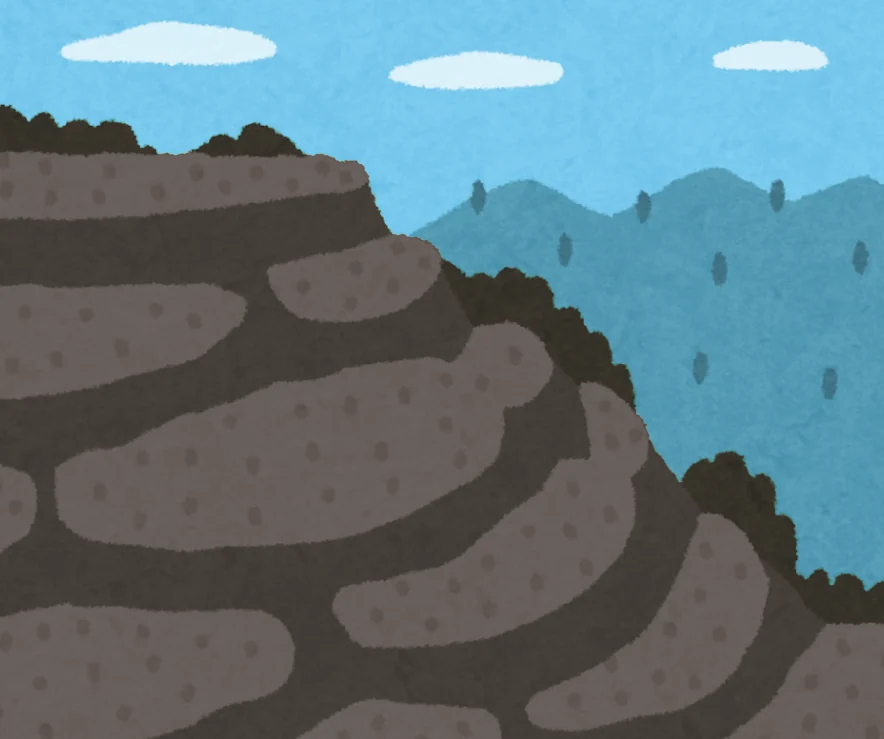

換你來玩
資源盤點：用 SES 框架分類
掃描 QR Code，把水梯田上的 個資源，一一放進社會生態系統框架的類別裡。
小組討論過程白板上先拆出場域時間軸、做的事、成效、利害關係人與問題；筆記上定下核心問題「對地方來說，什麼缺一不可？」與桌遊＋手機遊戲的形式，想呈現一個鄉村是複雜的、變動的，不是單一事物。（點照片可放大）
AI 使用方式使用 Claude（Anthropic）協助進行簡報動態內容設計、小遊戲程式碼製作、圖例統整繪製，以便清楚表達概念。

不只向上媒合資源，也橫向連結在地組織、設計、研究、教育與其他社群
球與杯：杯壁越陡越不容易被推動，杯子越深越能回到原處
同一個功能有多種來源，而且它們對衝擊的反應不同
系統會在成長、保守、釋放、重組之間循環
理論文獻、案例資料與圖資來源
換你來玩
掃描 QR Code，把水梯田上的 個資源，一一放進社會生態系統框架的類別裡。
小組討論過程白板上先拆出場域時間軸、做的事、成效、利害關係人與問題；筆記上定下核心問題「對地方來說，什麼缺一不可？」與桌遊＋手機遊戲的形式，想呈現一個鄉村是複雜的、變動的，不是單一事物。（點照片可放大）
AI 使用方式使用 Claude（Anthropic）協助進行簡報動態內容設計、小遊戲程式碼製作、圖例統整繪製，以便清楚表達概念。
已分類 0 /
掃描 QR Code 打開尋找畫面，接著到教室各個角落，找出這塊土地上需要的事物。找對了，它就會回到投影幕上的水梯田。
房間 已加入 0 人
還沒設定 Firebase：手機掃描不會傳到投影幕，目前只能用左下角的模擬掃描。
對維持水梯田濕地生態，這個需要嗎？
它屬於 SES 的哪一個子系統？
主持人用：點按鈕＝有人掃到那張 QR Code，會開始全班投票（沒有手機時備用）。紅色虛線是不需要的。「一次找回全部」會跳過投票。